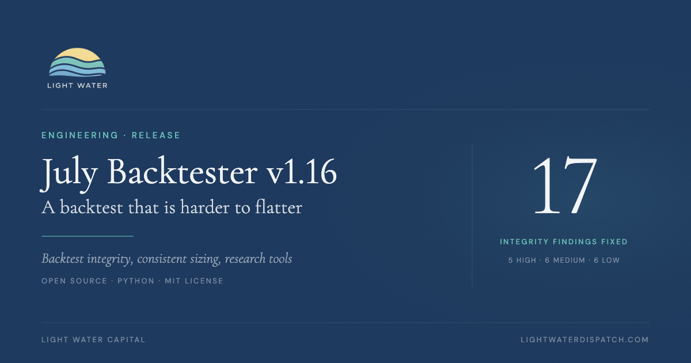

A bug that crashes a backtest costs you an afternoon. The expensive bugs are the ones that make a strategy look a little better than it is: a stop that fills at a price the market never offered, a validation test that passes by construction. Those runs finish cleanly and nothing looks wrong.
So for this release we went looking for exactly that. We reviewed July Backtester adversarially: the engine, metrics, Monte Carlo, walk-forward, sizing and reporting, searching for any defect that would change a result or what a researcher concludes from it. Every finding had to come with a synthetic reproduction that we ran against the main branch before it counted.
Where the Engine Was Too Kind
The five High findings share a direction. Each one made results look better than they would have been in practice.
Stops ignored gaps. If a position had a stop at 95 and the next bar opened at 80, the engine still filled the stop at 95. Gap-through stops now fill at the worse open.
Stops weren’t checked on the fill bar. Under open execution, a trade could enter, trade down through its stop the same day, and still be booked as a winner. In one reproduction, a fill-bar low of 90 against a 95 stop became a +7% trade. The initial stop is now checked on the fill bar.
Walk-forward measured the wrong thing. In-sample and out-of-sample performance was normalized by starting capital and annualized over the span of the trades rather than the window. A real out-of-sample collapse from 10% to 2% could pass. Each window is now measured on its own equity and annualized over its own length. Rolling fold zero, which has no in-sample period, used to pass automatically. Empty or undersized folds are now treated as unavailable.
The Monte Carlo score mostly passed by construction. In testing, all 200 of 200 zero-edge strategies passed the performance check, and the drawdown check compared mark-to-market drawdown with closed-trade drawdown. MC Score v2 adds a bootstrap edge test and compares drawdowns under the same definition. The old score stays available as mc_score_legacy for comparison.
Equity shorts reserved no collateral. A portfolio set to a 10% allocation per position could end up 300% gross short. Shorts now reserve 50% of their value against buying power until they are covered.
The Quieter Problems
The Medium and Low findings were less dramatic, but each could still change a result or how it read:
- Delisted positions stayed open inside the simulation loop, locking up capital and oversizing later entries. They are now closed out inside the simulation, their capital is released and they can’t be re-entered.
- Strategies that produced zero trades, or crashed, disappeared from the results. A parameter sweep could look cleaner than it was. They are now counted and reported.
- The liquidity cap and market-impact model read the full-day volume of the bar being traded at the open, which is a small look-ahead. They now use the prior bar.
- The equity curve was recorded before the bar’s fills, so exits showed up a bar late.
- Survivorship-free universes quietly dropped short-lived names for having too little history, which is the very survivorship they exist to avoid.
- Several stop configurations produced the same strategy name, and the sensitivity report pooled results across portfolios and stop settings.
- Monte Carlo and noise injection were unseeded, so a run couldn’t be reproduced exactly. There is now a
--seedoption. - The Yahoo provider dropped the last requested bar, and the Polygon provider never retried rate limits and could cache a partial download.
Your Results Will Change
Entry eligibility, fills, stop exposure, short buying power, equity timing and the walk-forward and Monte Carlo verdicts all behave differently in v1.16. Trade counts, allocations, costs and reported metrics can move either way, though most of the High fixes push results down. Re-run a backtest before you compare it with an older one. Where a default changed, the previous behavior is still one setting away:
| Behavior | v1.16 default | Previous behavior |
|---|---|---|
| Entry triggering | entry_trigger="edge" | "level" |
| Gap-through stop fills | stop_gap_fill="open" | "level" |
| Stop check on the fill bar | entry_bar_stop_check=True | False |
| Equity-short collateral | short_margin_requirement=0.5 | 0.0 |
| Indicator warm-up history | pit_warmup_days=400 | 0 |
| Monte Carlo score | MC Score v2 | mc_score_legacy |
The edge trigger deserves a word. A strategy whose signal stays “long” for weeks used to re-enter the moment a stop took it out. Now it enters only on a fresh transition into the signal, which matches how most of these rules are meant to trade.
Sizing, Universes and Data
One sizing path. Every position-sizing method now runs through a single entry point, and long and short legs on equities and futures all honor the configured method. Kelly sizing no longer sees outcomes from later in the same bar. Futures shorts now get the same liquidity cap and impact costs as longs. When a position is cut down by a cap, missing stop data, a cash or margin limit or the portfolio heat limit, the run reports which condition did it, so a smaller-than-expected position has a reason attached.
Point-in-time universes resolve to securities, not tickers. Tickers get reused. If a company is delisted and its symbol is later reissued, a naive lookup quietly swaps the new company into the old one’s history. Dated universe members now resolve to security IDs, retired tickers resolve through rename metadata, and an ambiguous mapping stops the run instead of guessing.
Data quality. Zero and negative prices are now caught, the missing-bars penalty was recalibrated, and Polygon downloads retry with backoff and log what failed.
The repository is also now fully separate from our private Norgate dataset. Point it at your own per-symbol Parquet files, or run it on Yahoo Finance data with no API key.
New Research Tools
- Pattern scanner.
scripts/pattern_scan.pydetects triangles, rectangles and inverse head-and-shoulders bases, replays them historically and writes HTML contact sheets with the parameters behind each detection. - Universe builder.
scripts/build_us_universe.pygenerates a dated liquidity cache for the US equity universe. - Trade-log diagnostics. Gap-proximity and dead-money scans, plus annual-return, leverage and volatility diagnostics.
- Run controls.
--workerscaps simulation processes,--seedmakes Monte Carlo and bootstrap runs repeatable, and--verbose/--no-verbosenow behave consistently.
How It Was Checked
The full test suite, slow tests included, passes on the release code: 3,555 passed, 6 skipped and 11 expected failures. Before merging, each recent change got its own adversarial review, a regression fix, a full-suite run and green CI. Mutation checks deliberately break the sizing, stop, heat and data-quality penalty logic to confirm the tests catch it.
Who Did the Work
Three members of our Systematic Strategies team shipped meaningful parts of this release.
Shardul Mehetar, Lead Quantitative Research Intern, built the edge entry trigger, which became the new default. He also fixed point-in-time overrides after ticker renames, added discovery of synced universe rosters alongside the price data and wrote the data-quality cast census.
Angad Bhatti, Quantitative Strategy Intern, made his first contributions in this release. He made the engine refuse to merge two distinct securities that share a bare ticker, added the --workers cap, made seeded entry priority reshuffle reproducibly on every bar, and gave the price provider and universe reader a single shared data directory.
Suriya Narayanan Rajavel, Quantitative Strategy Intern, built the gap-proximity and dead-money scans for trade logs.
Get It
July Backtester is open source and MIT-licensed. The v1.16.0 release notes include the full migration table and every merged change. Use the pinned requirements in a fresh Python 3.12 environment. If you want to know where the engine was wrong, all 17 findings and their reproductions are public in the issue tracker.
A backtest is a claim about the past, and the engine is what that claim rests on. This release makes the engine harder to fool.
Why We Open-Sourced Our Trading Backtester
The story behind July Backtester: why we built our own engine, what Monte Carlo and walk-forward analysis are for, and why we gave it away.
Read the launch post